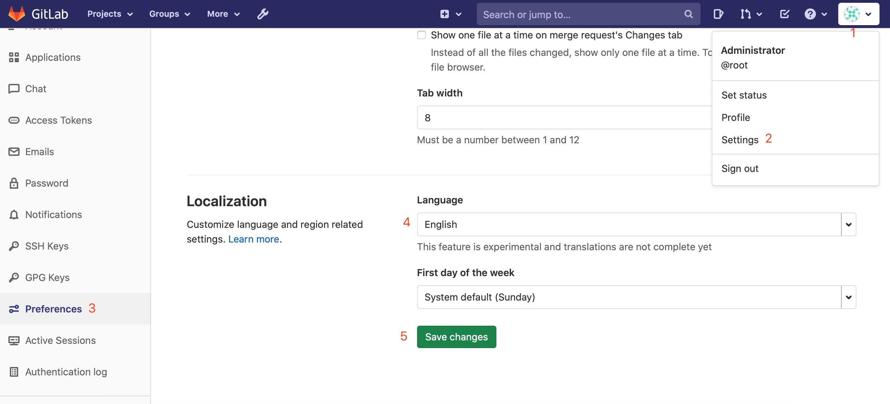
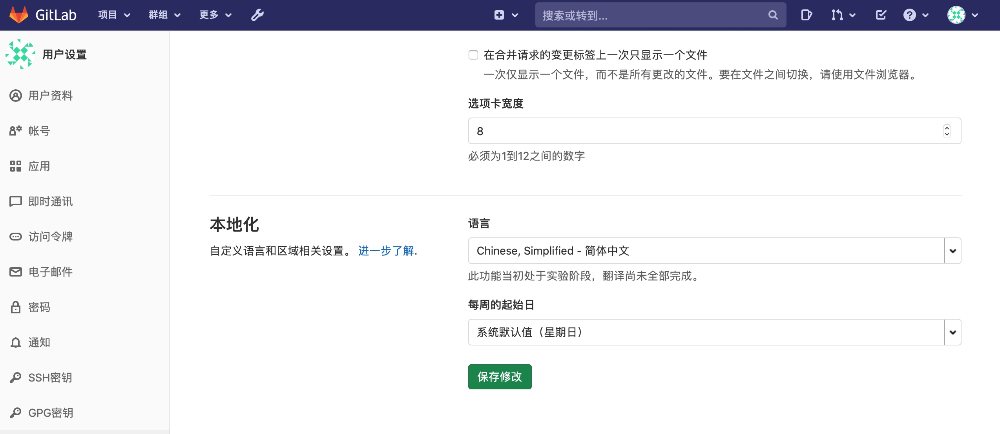
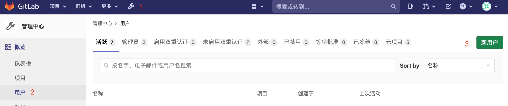
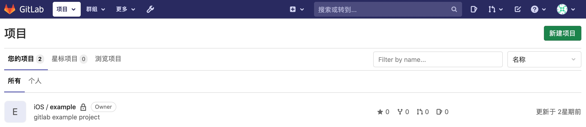
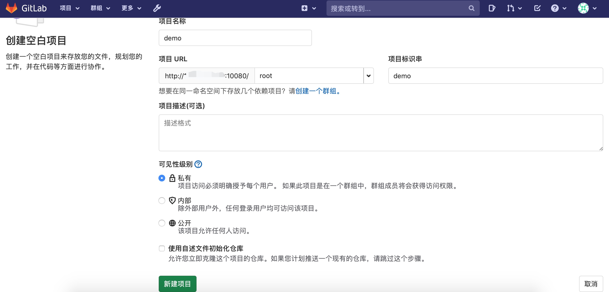
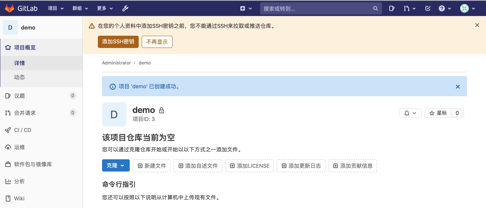
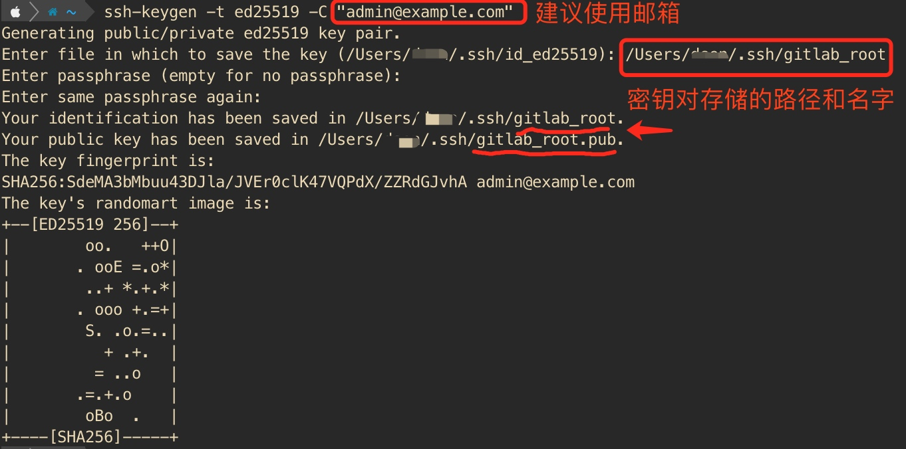
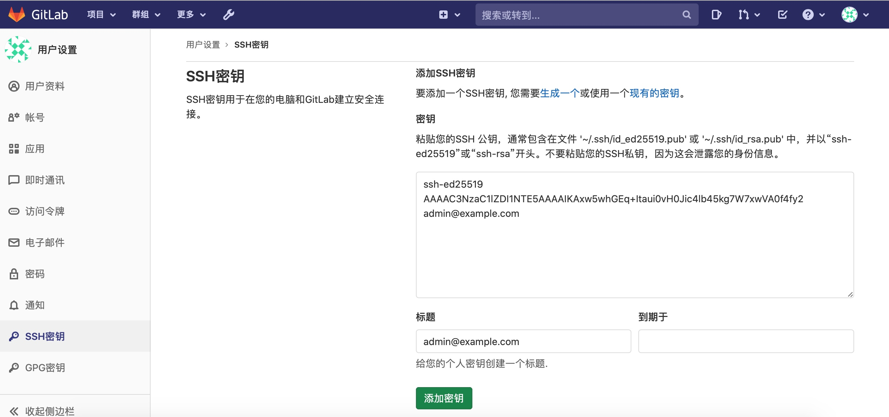
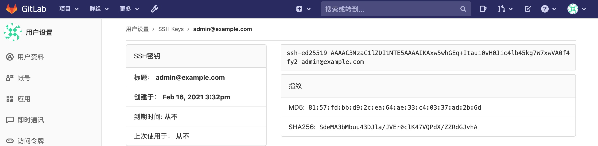

三、安装Gitlab
1、打开终端，搜索gitlab.
> docker search gitlab
2、拉取镜像
> docker pull gitlab/gitlab-ce
3.创建容器
创建之前，建议打开Docker Desktop - Preferences - Resources
Advanced 页签把 CPU 改成 4， Memory 改成 4GB。
File sharing 全部删除，然后添加 /Users 或 /Users/用户名，以减少容器访问磁盘。
终端执行命令：
docker run --detach \
--hostname gitlab.interotc.com \
--name gitlab \
--restart always \
--publish 10443:443 --publish 10080:80 --publish 10022:22 \
--volume $HOME/gitlab/config:/etc/gitlab \
--volume $HOME/gitlab/logs:/var/log/gitlab \
--volume $HOME/gitlab/data:/var/opt/gitlab \
--privileged=true \
gitlab/gitlab-ce:13.8.1-ce.0
命令参数解释
--detach 后台运行
--hostname gitlab.interotc.com 容器的主机名或域名，即192.168.10.10或者 gitlab.example.com
--name gitlab 容器的名字
--restart always 设置重启方式，always 代表一直开启，服务器开机后也会自动开启的
--publish 10080:80 把本机端口映射到容器端口，即访问宿主机10080端口为容器的80端口
--volume $HOME/gitlab/config:/etc/gitlab 宿主机目录映射到容器目录
--privileged=true 提升容器的root用户拥有真正root权限，否则只是普通用户权限
gitlab/gitlab-ce:13.8.1-ce.0 这里我指定了镜像的tag版本，如果你是最新的版本，可以改为gitlab/gitlab-ce
创建成功后会显示一串字符，例如
> docker run --detach \
--hostname gitlab.interotc.com \
--name gitlab \
--restart always \
--publish 10443:443 --publish 10080:80 --publish 10022:22 \
--volume $HOME/gitlab/config:/etc/gitlab \
--volume $HOME/gitlab/logs:/var/log/gitlab \
--volume $HOME/gitlab/data:/var/opt/gitlab \
--privileged=true \
gitlab/gitlab-ce:13.8.1-ce.0
af8fc3a2499f6ce47d52a64871dd2027bfcb3e17c7ee23fc64026c6f236e09ab
执行命令
docker ps 或者 docker container ls
> docker ps
CONTAINER ID IMAGE COMMAND CREATED STATUS PORTS NAMES
af8fc3a2499f gitlab/gitlab-ce:13.8.1-ce.0 "/assets/wrapper" About a minute ago Up About a minute (health: starting) 0.0.0.0:10022->22/tcp, 0.0.0.0:10080->80/tcp, 0.0.0.0:10443->443/tcp gitlab
STATUS 会有下面几种状态
`health: starting` 说明容器正在启动中，还没有启动完成。
`healthy` 说明容器启动完成，一切正常。
`unhealthy` 说明容器启动完成，但是不健康，有问题。建议执行命令重启容器`docker restart gitlab`。
大坑:如果状态一直是unhealthy，在更改CPU=4 , Memory=4GB的情况下，状态变为healthy。恢复CPU=2 , Memory=2GB时，状态又变回unhealthy。说明gitlab很消耗性能。
深坑：在启动容器后， com.docker.hyperkit 进程出现高达 100%、200%的CPU使用率，在提高CPU数量，删除File sharing条目之后得到缓解。
4、访问gitlab
本机打开浏览器访问http://127.0.0.1:10080，会显示Change your password，这是第一次访问，修改管理员账户密码。更改完成后，就进入了登录页面，输入root和刚改的密码，就可以进入gitlab的控制台了。
局域网内其他用户可以通过http://宿主机ip:10080来访问。
5.设置语言
成功登录后，可以设置当前用户的语言为中文。点击右上角的头像，选择Settings，左侧找到Preferences，页面向下滚动就可以看到Localization了，下拉选择中文，最后点击Save changes，刷新页面就可以显示成中文了。如图


6.创建用户
在使用root用户登录之后，点击导航栏的扳手图标，找到左侧用户，点击右侧按钮新用户，之后填写好必填项，初始密码填写12345678，点击最下面的创建用户按钮就可以了。

7.创建一个项目
点击导航栏的Gitlab图标，会显示首页的项目，点击右侧新建项目，选择创建空白项目，也可以选择使用模板创建。

项目名称填入demo，点击新建项目按钮完成。

创建完成后，还需要添加SSH，才可以访问仓库。

点击添加SSH密钥，在密钥输入框中，填写密钥。如果不知道如何添加，可以点击页面中的生成一个链接，会跳转到帮助页面，有文档教你如何创建密钥。
下面以Mac系统为例，创建一个ED25519密钥。
打开命令行，输入ssh-keygen -t ed25519 -C "admin@example.com"回车，记得替换一下邮箱。

注意，输入文件名字时，如果没有指定完整路径，文件会存放在当前用户的目录，即/Users/xxx
查看一下你的密钥对存放的目录
ls ~/.ssh/ #这是默认目录，可以替换指定的存储目录
gitlab_root gitlab_root.pub
使用cat命令，查看并复制公钥的内容。复制ssh开头的这行内容。
> cat ~/.ssh/gitlab_root.pub
ssh-ed25519 AAAAC3NzaC1lZDI1NTE5AAAAIKAxw5whGEq+Itaui0vH0Jic4lb45kg7W7xwVA0f4fy2 admin@example.com
复制后粘贴到gitlab中的密钥输入框内，点击添加密钥。


然后回到demo项目的主页，按照命令行指引，这就完成项目的创建了。
踩坑
坑:
Permission denied (publickey,password,keyboard-interactive).
参考:Permission denied (publickey,keyboard-interactive)
参考:SSH Permission denied (publickey,password,keyboard-interactive)
参考:Mac下SSH免密登录Permission denied (publickey,password,keyboard-interactive).
问题的原因应该是SSH端口的问题。
gitlab容器创建时，增加了 10022:22 的映射关系，即宿主机 10022 端口映射到容器的 22 端口。在使用 git clone git@gitlab.interotc.com:zzjs/demo.git 命令时会报上面的错误。
同时又因为本地有多个git环境，不同的账号。
不断的google之后，处理如下：
1.创建config文件，来解决不同环境和不同账号的问题。
2.创建authorized_keys文件，来解决免密登录。
# 进入ssh目录
> cd ~/.ssh
# 查看文件，我这里的文件比较多
> ls
gitee_id_rsa github_id_rsa gitlab_zzjs known_hosts
config gitee_id_rsa.pub github_id_rsa.pub gitlab_zzjs.pub
可以看到已经存在一个 config 文件了，如果没有这个文件，使用 touch config 创建一个就好了。
在config文件中添加下面的内容
Host gitlab.interotc.com
HostName gitlab.interotc.com
User zzjs@example.com
Port 10022
PreferredAuthentications publickey
IdentityFile ~/.ssh/gitlab_zzjs
当前目录是没有 authorized_keys 文件的，这里使用管道的方式创建文件。
> cat gitlab_zzjs.pub >> authorized_keys
> chmod 600 authorized_keys
> cat authorized_keys
ssh-ed25519 AAAAC3NzaC1lZDI1NTE5AAAAIKEY0aS5EkIHAs3PPT2Gv1qjbp14S084qn5t6ryt1O/W zzjs@example.com
这两步完成后来测试一下
> ssh -T git@gitlab.interotc.com
The authenticity of host '[gitlab.interotc.com]:10022 ([x.x.x.x]:10022)' can't be established.
ECDSA key fingerprint is SHA256:zX6tCKkYn+/77AMxBN0OWr1uoo43jKCJqp+2bGt4PVY.
Are you sure you want to continue connecting (yes/no/[fingerprint])? yes
Warning: Permanently added '[gitlab.interotc.com]:10022' (ECDSA) to the list of known hosts.
Welcome to GitLab, @zzjs!
再次测试，并git clone，成功！
> ssh -T git@gitlab.interotc.com
Welcome to GitLab, @zzjs!
> git clone git@gitlab.interotc.com:zzjs/demo.git
Cloning into 'demo'...
warning: You appear to have cloned an empty repository.
虽然解决了问题，但对于本地来说设置和操作过多，后续尝试使用Nginx去解决这个问题。
坑:
Pushing to http://gitlab.interotc.com/zzjs/demo.git
remote: You are not allowed to push code to this project.
fatal: unable to access 'http://gitlab.interotc.com/zzjs/demo.git/': The requested URL returned error: 403
这是使用Sourcetree，在推送时的报错。暂时较忙，也没有启用https，在新建克隆时，把http的请求改成git的请求后，问题不在出现。